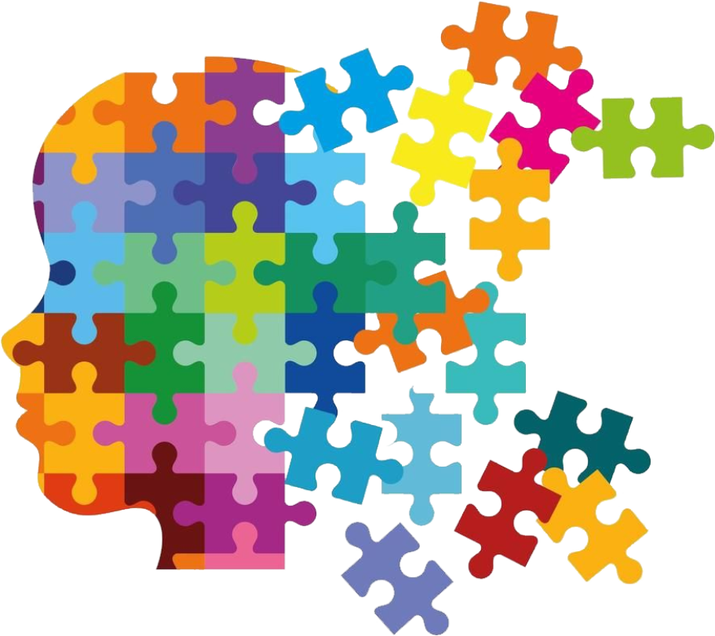

Algumas pessoas no espectro podem ter dificuldades para desenvolver a fala, enquanto outras falam fluentemente, mas podem ter dificuldade em interpretar o significado mais profundo das interações sociais.
Há também uma tendência a interpretar a linguagem de forma mais literal, e o uso de sarcasmo ou ironia pode ser mal compreendido.
Indivíduos com autismo podem achar desafiador estabelecer ou manter contato visual, interpretar expressões faciais e emoções, ou entender normas sociais não faladas, como o conceito de "espaço pessoal".
As interações podem ser percebidas como desajeitadas, o que não significa que a pessoa não queira se conectar, mas sim que o faz de uma maneira diferente.
Comportamentos como movimentos repetitivos (balançar as mãos, balançar o corpo) são comuns e podem ajudar a regular o excesso de estímulos sensoriais ou emoções.
Muitos autistas desenvolvem interesses intensos e focados em tópicos específicos, que podem ser interpretados como obsessões, mas são formas de explorar e aprender profundamente sobre algo que lhes interessa.
Muitas pessoas autistas apresentam hipersensibilidade ou hipossensibilidade a estímulos sensoriais, como sons, luzes, texturas e cheiros. Isso pode tornar certos ambientes ou situações desconfortáveis, mesmo que para outros pareçam normais.
Cada pessoa no espectro autista é única, e as experiências variam amplamente. O mais importante é respeitar suas particularidades sem tentar moldá-las às expectativas sociais típicas. É importante aceitar que comportamentos diferentes ou dificuldades na comunicação não diminuem o valor ou a complexidade da pessoa.
Muitas vezes, pessoas autistas preferem uma comunicação mais direta e clara, sem rodeios ou implicações implícitas. Explicar de forma detalhada e objetiva o que espera ou deseja de uma interação pode ser benéfico.
Evitar usar sarcasmo ou figuras de linguagem complexas pode facilitar a compreensão.
Por vezes, pessoas autistas podem demorar mais para responder ou reagir em interações sociais. Manter a paciência e dar espaço para que se expressem no seu próprio tempo é fundamental. Não pressionar a pessoa a agir de uma maneira que a deixe desconfortável, como forçar o contato visual ou exigir uma participação intensa em situações sociais, pode ser respeitoso e empático.
Criar ambientes que levem em conta questões sensoriais pode ser muito útil. Por exemplo, reduzir ruídos excessivos, controlar luzes brilhantes e permitir pausas ou momentos de descanso em ambientes sociais ajudam a pessoa a se sentir mais à vontade.
Oferecer escolhas sobre onde sentar, como participar e o que fazer em atividades coletivas também é uma forma de tornar o ambiente mais inclusivo.
Pessoas autistas muitas vezes se sentem confortáveis com rotinas e previsibilidade. Alterações inesperadas podem causar ansiedade ou desconforto. Se for necessário mudar uma rotina, tente comunicar isso com antecedência e explicar claramente o que vai acontecer.
Muitas pessoas com autismo têm talentos e habilidades específicas, como excelente memória, habilidade com números, ou proficiência em detalhes técnicos. Incentivar essas habilidades pode ajudar a aumentar a autoestima e promover a inclusão.
É importante não subestimar a capacidade de entendimento e inteligência de uma pessoa autista. Mesmo que sua maneira de se expressar seja diferente, ela ainda pode ter uma compreensão profunda sobre diversos tópicos.
Relacionar-se com pessoas no espectro autista exige empatia, compreensão e abertura para aprender sobre suas particularidades. O mais importante é reconhecer a diversidade humana e valorizar cada indivíduo pelas suas características únicas, sem julgamentos ou expectativas de conformidade aos padrões sociais tradicionais.
Autismo
O autismo, ou Transtorno do Espectro Autista (TEA), é uma condição neurodesenvolvimental caracterizada por desafios em três áreas principais: comunicação, interação social e comportamentos repetitivos ou interesses restritos. É chamado de "espectro" porque varia amplamente em termos de severidade e manifestações, com algumas pessoas apresentando dificuldades mais sutis e outras com necessidades de suporte mais significativas.
Características do Autismo
Dificuldades na comunicação:
Algumas pessoas no espectro podem ter dificuldades para desenvolver a fala, enquanto outras falam fluentemente, mas podem ter dificuldade em interpretar o significado mais profundo das interações sociais.
Há também uma tendência a interpretar a linguagem de forma mais literal, e o uso de sarcasmo ou ironia pode ser mal compreendido.
Dificuldades nas interações sociais:
Indivíduos com autismo podem achar desafiador estabelecer ou manter contato visual, interpretar expressões faciais e emoções, ou entender normas sociais não faladas, como o conceito de "espaço pessoal".
As interações podem ser percebidas como desajeitadas, o que não significa que a pessoa não queira se conectar, mas sim que o faz de uma maneira diferente.
Comportamentos repetitivos e interesses restritos:
Comportamentos como movimentos repetitivos (balançar as mãos, balançar o corpo) são comuns e podem ajudar a regular o excesso de estímulos sensoriais ou emoções.
Muitos autistas desenvolvem interesses intensos e focados em tópicos específicos, que podem ser interpretados como obsessões, mas são formas de explorar e aprender profundamente sobre algo que lhes interessa.
Questões sensoriais:
Muitas pessoas autistas apresentam hipersensibilidade ou hipossensibilidade a estímulos sensoriais, como sons, luzes, texturas e cheiros. Isso pode tornar certos ambientes ou situações desconfortáveis, mesmo que para outros pareçam normais.
Como nos relacionar com pessoas autistas
Respeito pelas diferenças:
Cada pessoa no espectro autista é única, e as experiências variam amplamente. O mais importante é respeitar suas particularidades sem tentar moldá-las às expectativas sociais típicas. É importante aceitar que comportamentos diferentes ou dificuldades na comunicação não diminuem o valor ou a complexidade da pessoa.
Comunicação clara e direta:
Muitas vezes, pessoas autistas preferem uma comunicação mais direta e clara, sem rodeios ou implicações implícitas. Explicar de forma detalhada e objetiva o que espera ou deseja de uma interação pode ser benéfico.
Evitar usar sarcasmo ou figuras de linguagem complexas pode facilitar a compreensão.
Paciência e compreensão:
Por vezes, pessoas autistas podem demorar mais para responder ou reagir em interações sociais. Manter a paciência e dar espaço para que se expressem no seu próprio tempo é fundamental. Não pressionar a pessoa a agir de uma maneira que a deixe desconfortável, como forçar o contato visual ou exigir uma participação intensa em situações sociais, pode ser respeitoso e empático.
Ambiente inclusivo:
Criar ambientes que levem em conta questões sensoriais pode ser muito útil. Por exemplo, reduzir ruídos excessivos, controlar luzes brilhantes e permitir pausas ou momentos de descanso em ambientes sociais ajudam a pessoa a se sentir mais à vontade.
Oferecer escolhas sobre onde sentar, como participar e o que fazer em atividades coletivas também é uma forma de tornar o ambiente mais inclusivo.
Respeito às rotinas:
Pessoas autistas muitas vezes se sentem confortáveis com rotinas e previsibilidade. Alterações inesperadas podem causar ansiedade ou desconforto. Se for necessário mudar uma rotina, tente comunicar isso com antecedência e explicar claramente o que vai acontecer.
Focar nas habilidades:
Muitas pessoas com autismo têm talentos e habilidades específicas, como excelente memória, habilidade com números, ou proficiência em detalhes técnicos. Incentivar essas habilidades pode ajudar a aumentar a autoestima e promover a inclusão.
Não infantilizar:
É importante não subestimar a capacidade de entendimento e inteligência de uma pessoa autista. Mesmo que sua maneira de se expressar seja diferente, ela ainda pode ter uma compreensão profunda sobre diversos tópicos.
Relacionar-se com pessoas no espectro autista exige empatia, compreensão e abertura para aprender sobre suas particularidades. O mais importante é reconhecer a diversidade humana e valorizar cada indivíduo pelas suas características únicas, sem julgamentos ou expectativas de conformidade aos padrões sociais tradicionais.